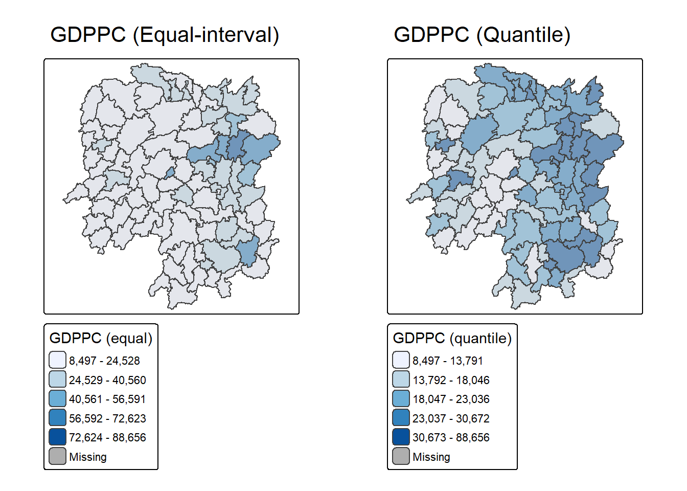
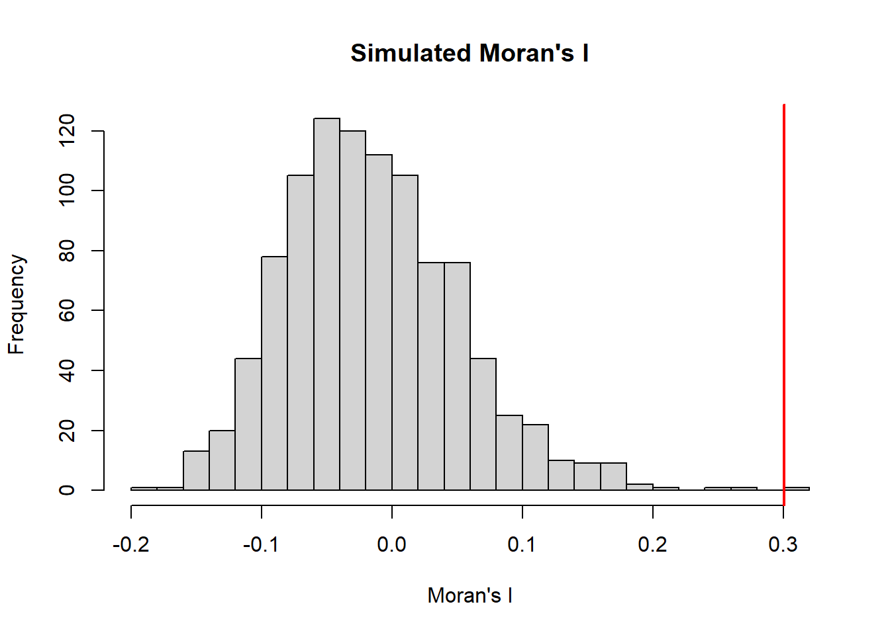
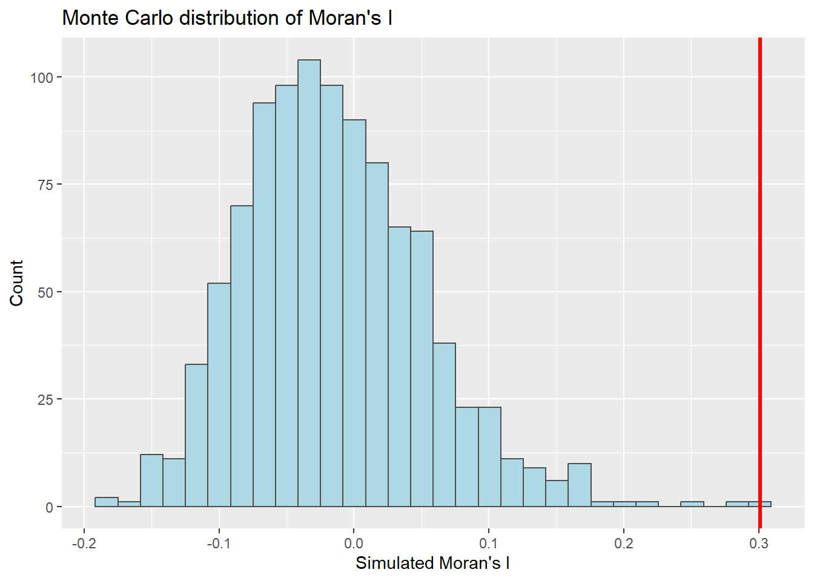
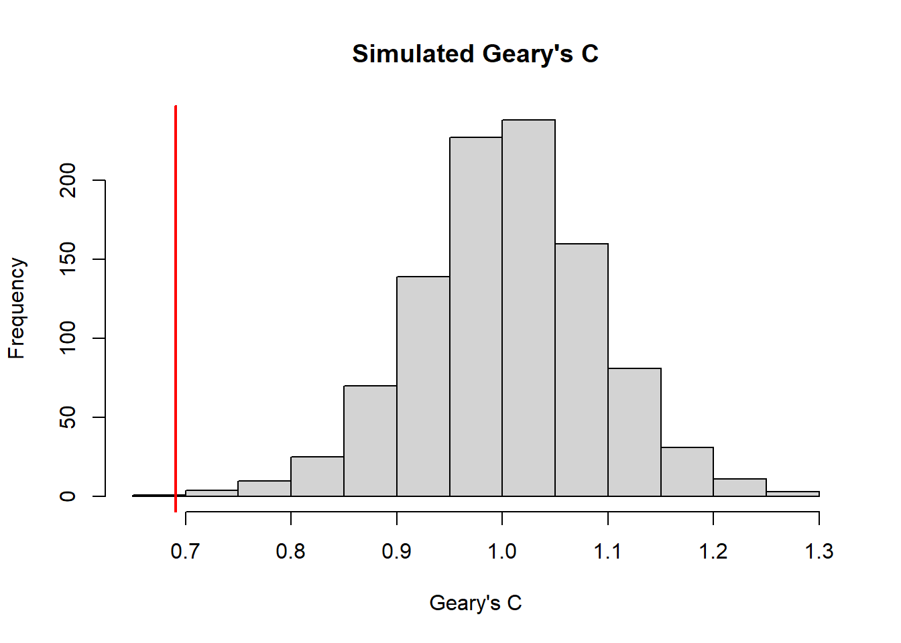

# Load required packages
if (!requireNamespace("pacman", quietly = TRUE)) install.packages("pacman")
pacman::p_load(sf, spdep, tmap, tidyverse)
# --------------------------------------------------
# 1. Read spatial data (Hunan county‐level shapefile)
# --------------------------------------------------
hunan <- st_read(dsn = "data/geospatial", layer = "Hunan")Reading layer `Hunan' from data source
`D:\edithting\ISSS626\Hands-on_Ex\Hands-on_Ex05\data\geospatial'
using driver `ESRI Shapefile'
Simple feature collection with 88 features and 7 fields
Geometry type: POLYGON
Dimension: XY
Bounding box: xmin: 108.7831 ymin: 24.6342 xmax: 114.2544 ymax: 30.12812
Geodetic CRS: WGS 84# Check
print(hunan)Simple feature collection with 88 features and 7 fields
Geometry type: POLYGON
Dimension: XY
Bounding box: xmin: 108.7831 ymin: 24.6342 xmax: 114.2544 ymax: 30.12812
Geodetic CRS: WGS 84
First 10 features:
NAME_2 ID_3 NAME_3 ENGTYPE_3 Shape_Leng Shape_Area County
1 Changde 21098 Anxiang County 1.869074 0.10056190 Anxiang
2 Changde 21100 Hanshou County 2.360691 0.19978745 Hanshou
3 Changde 21101 Jinshi County City 1.425620 0.05302413 Jinshi
4 Changde 21102 Li County 3.474325 0.18908121 Li
5 Changde 21103 Linli County 2.289506 0.11450357 Linli
6 Changde 21104 Shimen County 4.171918 0.37194707 Shimen
7 Changsha 21109 Liuyang County City 4.060579 0.46016789 Liuyang
8 Changsha 21110 Ningxiang County 3.323754 0.26614198 Ningxiang
9 Changsha 21111 Wangcheng County 2.292093 0.13049161 Wangcheng
10 Chenzhou 21112 Anren County 2.240739 0.13343936 Anren
geometry
1 POLYGON ((112.0625 29.75523...
2 POLYGON ((112.2288 29.11684...
3 POLYGON ((111.8927 29.6013,...
4 POLYGON ((111.3731 29.94649...
5 POLYGON ((111.6324 29.76288...
6 POLYGON ((110.8825 30.11675...
7 POLYGON ((113.9905 28.5682,...
8 POLYGON ((112.7181 28.38299...
9 POLYGON ((112.7914 28.52688...
10 POLYGON ((113.1757 26.82734...st_geometry_type(hunan) [1] POLYGON POLYGON POLYGON POLYGON POLYGON POLYGON POLYGON POLYGON POLYGON
[10] POLYGON POLYGON POLYGON POLYGON POLYGON POLYGON POLYGON POLYGON POLYGON
[19] POLYGON POLYGON POLYGON POLYGON POLYGON POLYGON POLYGON POLYGON POLYGON
[28] POLYGON POLYGON POLYGON POLYGON POLYGON POLYGON POLYGON POLYGON POLYGON
[37] POLYGON POLYGON POLYGON POLYGON POLYGON POLYGON POLYGON POLYGON POLYGON
[46] POLYGON POLYGON POLYGON POLYGON POLYGON POLYGON POLYGON POLYGON POLYGON
[55] POLYGON POLYGON POLYGON POLYGON POLYGON POLYGON POLYGON POLYGON POLYGON
[64] POLYGON POLYGON POLYGON POLYGON POLYGON POLYGON POLYGON POLYGON POLYGON
[73] POLYGON POLYGON POLYGON POLYGON POLYGON POLYGON POLYGON POLYGON POLYGON
[82] POLYGON POLYGON POLYGON POLYGON POLYGON POLYGON POLYGON
18 Levels: GEOMETRY POINT LINESTRING POLYGON MULTIPOINT ... TRIANGLEst_crs(hunan)Coordinate Reference System:
User input: WGS 84
wkt:
GEOGCRS["WGS 84",
DATUM["World Geodetic System 1984",
ELLIPSOID["WGS 84",6378137,298.257223563,
LENGTHUNIT["metre",1]]],
PRIMEM["Greenwich",0,
ANGLEUNIT["degree",0.0174532925199433]],
CS[ellipsoidal,2],
AXIS["latitude",north,
ORDER[1],
ANGLEUNIT["degree",0.0174532925199433]],
AXIS["longitude",east,
ORDER[2],
ANGLEUNIT["degree",0.0174532925199433]],
ID["EPSG",4326]]# --------------------------------------------------
# 2. Read aspatial CSV data (development indicators)
# --------------------------------------------------
hunan2012 <- read_csv("data/aspatial/Hunan_2012.csv")
glimpse(hunan2012)Rows: 88
Columns: 29
$ County <chr> "Anhua", "Anren", "Anxiang", "Baojing", "Chaling", "Changn…
$ City <chr> "Yiyang", "Chenzhou", "Changde", "Hunan West", "Zhuzhou", …
$ avg_wage <dbl> 30544, 28058, 31935, 30843, 31251, 28518, 54540, 28597, 33…
$ deposite <dbl> 10967.0, 4598.9, 5517.2, 2250.0, 8241.4, 10860.0, 24332.0,…
$ FAI <dbl> 6831.7, 6386.1, 3541.0, 1005.4, 6508.4, 7920.0, 33624.0, 1…
$ Gov_Rev <dbl> 456.72, 220.57, 243.64, 192.59, 620.19, 769.86, 5350.00, 1…
$ Gov_Exp <dbl> 2703.0, 1454.7, 1779.5, 1379.1, 1947.0, 2631.6, 7885.5, 11…
$ GDP <dbl> 13225.0, 4941.2, 12482.0, 4087.9, 11585.0, 19886.0, 88009.…
$ GDPPC <dbl> 14567, 12761, 23667, 14563, 20078, 24418, 88656, 10132, 17…
$ GIO <dbl> 9276.90, 4189.20, 5108.90, 3623.50, 9157.70, 37392.00, 513…
$ Loan <dbl> 3954.90, 2555.30, 2806.90, 1253.70, 4287.40, 4242.80, 4053…
$ NIPCR <dbl> 3528.3, 3271.8, 7693.7, 4191.3, 3887.7, 9528.0, 17070.0, 3…
$ Bed <dbl> 2718, 970, 1931, 927, 1449, 3605, 3310, 582, 2170, 2179, 1…
$ Emp <dbl> 494.310, 290.820, 336.390, 195.170, 330.290, 548.610, 670.…
$ EmpR <dbl> 441.4, 255.4, 270.5, 145.6, 299.0, 415.1, 452.0, 127.6, 21…
$ EmpRT <dbl> 338.0, 99.4, 205.9, 116.4, 154.0, 273.7, 219.4, 94.4, 174.…
$ Pri_Stu <dbl> 54.175, 33.171, 19.584, 19.249, 33.906, 81.831, 59.151, 18…
$ Sec_Stu <dbl> 32.830, 17.505, 17.819, 11.831, 20.548, 44.485, 39.685, 7.…
$ Household <dbl> 290.4, 104.6, 148.1, 73.2, 148.7, 211.2, 300.3, 76.1, 139.…
$ Household_R <dbl> 234.5, 121.9, 135.4, 69.9, 139.4, 211.7, 248.4, 59.6, 110.…
$ NOIP <dbl> 101, 34, 53, 18, 106, 115, 214, 17, 55, 70, 44, 84, 74, 17…
$ Pop_R <dbl> 670.3, 243.2, 346.0, 184.1, 301.6, 448.2, 475.1, 189.6, 31…
$ RSCG <dbl> 5760.60, 2386.40, 3957.90, 768.04, 4009.50, 5220.40, 22604…
$ Pop_T <dbl> 910.8, 388.7, 528.3, 281.3, 578.4, 816.3, 998.6, 256.7, 45…
$ Agri <dbl> 4942.253, 2357.764, 4524.410, 1118.561, 3793.550, 6430.782…
$ Service <dbl> 5414.5, 3814.1, 14100.0, 541.8, 5444.0, 13074.6, 17726.6, …
$ Disp_Inc <dbl> 12373, 16072, 16610, 13455, 20461, 20868, 183252, 12379, 1…
$ RORP <dbl> 0.7359464, 0.6256753, 0.6549309, 0.6544614, 0.5214385, 0.5…
$ ROREmp <dbl> 0.8929619, 0.8782065, 0.8041262, 0.7460163, 0.9052651, 0.7…# --------------------------------------------------
# 3. Join the attribute data to shapefile
# --------------------------------------------------
hunan <- hunan %>%
left_join(hunan2012, by = "County")
# --------------------------------------------------
# 4. Visualising the development indicator (e.g. GDPPC)
# --------------------------------------------------
map_equal <- tm_shape(hunan) +
tm_polygons("GDPPC",
style = "equal",
n = 5,
palette = "Blues",
title = "GDPPC (equal)") +
tm_borders(alpha = 0.5) +
tm_layout(main.title = "GDPPC (Equal-interval)")
map_quantile <- tm_shape(hunan) +
tm_polygons("GDPPC",
style = "quantile",
n = 5,
palette = "Blues",
title = "GDPPC (quantile)") +
tm_borders(alpha = 0.5) +
tm_layout(main.title = "GDPPC (Quantile)")
# Arrange side by side
tmap_arrange(map_equal, map_quantile, ncol = 2, asp = 1)
# --------------------------------------------------
# 5. Build spatial weights (contiguity)
# --------------------------------------------------
# Queen contiguity
wm_q <- poly2nb(hunan, queen = TRUE)
# Summary
summary(wm_q)Neighbour list object:
Number of regions: 88
Number of nonzero links: 448
Percentage nonzero weights: 5.785124
Average number of links: 5.090909
Link number distribution:
1 2 3 4 5 6 7 8 9 11
2 2 12 16 24 14 11 4 2 1
2 least connected regions:
30 65 with 1 link
1 most connected region:
85 with 11 links# Row‐standardised weights
rswm_q <- nb2listw(wm_q, style = "W", zero.policy = TRUE)
# Inspect
rswm_qCharacteristics of weights list object:
Neighbour list object:
Number of regions: 88
Number of nonzero links: 448
Percentage nonzero weights: 5.785124
Average number of links: 5.090909
Weights style: W
Weights constants summary:
n nn S0 S1 S2
W 88 7744 88 37.86334 365.9147# --------------------------------------------------
# 6. Global Moran’s I
# --------------------------------------------------
# (a) Moran’s I test
mi <- moran.test(hunan$GDPPC, listw = rswm_q, zero.policy = TRUE, na.action = na.omit)
print(mi)
Moran I test under randomisation
data: hunan$GDPPC
weights: rswm_q
Moran I statistic standard deviate = 4.7351, p-value = 1.095e-06
alternative hypothesis: greater
sample estimates:
Moran I statistic Expectation Variance
0.300749970 -0.011494253 0.004348351 # (b) Monte Carlo permutation test
set.seed(1234)
mi_mc <- moran.mc(hunan$GDPPC, listw = rswm_q, nsim = 999, zero.policy = TRUE, na.action = na.omit)
print(mi_mc)
Monte-Carlo simulation of Moran I
data: hunan$GDPPC
weights: rswm_q
number of simulations + 1: 1000
statistic = 0.30075, observed rank = 1000, p-value = 0.001
alternative hypothesis: greater# Visualise simulated Moran’s I
hist(mi_mc$res, breaks = 20, main = "Simulated Moran's I", xlab = "Moran's I")
abline(v = mi_mc$statistic, col = "red", lwd = 2)
# (Optional) use ggplot2 for nicer histogram
library(ggplot2)
df_mi <- data.frame(sim = mi_mc$res)
ggplot(df_mi, aes(sim)) +
geom_histogram(bins = 30, fill = "lightblue", color = "grey30") +
geom_vline(xintercept = mi_mc$statistic, color = "red", size = 1.2) +
labs(title = "Monte Carlo distribution of Moran's I",
x = "Simulated Moran's I", y = "Count")
# --------------------------------------------------
# 7. Global Geary’s C
# --------------------------------------------------
# (a) Geary’s C test
gc <- geary.test(hunan$GDPPC, listw = rswm_q, zero.policy = TRUE)
print(gc)
Geary C test under randomisation
data: hunan$GDPPC
weights: rswm_q
Geary C statistic standard deviate = 3.6108, p-value = 0.0001526
alternative hypothesis: Expectation greater than statistic
sample estimates:
Geary C statistic Expectation Variance
0.6907223 1.0000000 0.0073364 # (b) Monte Carlo Geary’s C
set.seed(1234)
gc_mc <- geary.mc(hunan$GDPPC, listw = rswm_q, nsim = 999, zero.policy = TRUE)
print(gc_mc)
Monte-Carlo simulation of Geary C
data: hunan$GDPPC
weights: rswm_q
number of simulations + 1: 1000
statistic = 0.69072, observed rank = 1, p-value = 0.001
alternative hypothesis: greater# Histogram for Geary’s C
hist(gc_mc$res, breaks = 20, main = "Simulated Geary's C", xlab = "Geary's C")
abline(v = gc_mc$statistic, col = "red", lwd = 2)
# --------------------------------------------------
# 8. Spatial Correlogram (Moran’s I & Geary’s C)
# --------------------------------------------------
# (a) Moran’s I correlogram
mi_corr <- sp.correlogram(wm_q, hunan$GDPPC, order = 6, method = "I", style = "W")
plot(mi_corr)
print(mi_corr)Spatial correlogram for hunan$GDPPC
method: Moran's I
estimate expectation variance standard deviate Pr(I) two sided
1 (88) 0.3007500 -0.0114943 0.0043484 4.7351 2.189e-06 ***
2 (88) 0.2060084 -0.0114943 0.0020962 4.7505 2.029e-06 ***
3 (88) 0.0668273 -0.0114943 0.0014602 2.0496 0.040400 *
4 (88) 0.0299470 -0.0114943 0.0011717 1.2107 0.226015
5 (88) -0.1530471 -0.0114943 0.0012440 -4.0134 5.984e-05 ***
6 (88) -0.1187070 -0.0114943 0.0016791 -2.6164 0.008886 **
---
Signif. codes: 0 '***' 0.001 '**' 0.01 '*' 0.05 '.' 0.1 ' ' 1# (b) Geary’s C correlogram
gc_corr <- sp.correlogram(wm_q, hunan$GDPPC, order = 6, method = "C", style = "W")
plot(gc_corr)
print(gc_corr)Spatial correlogram for hunan$GDPPC
method: Geary's C
estimate expectation variance standard deviate Pr(I) two sided
1 (88) 0.6907223 1.0000000 0.0073364 -3.6108 0.0003052 ***
2 (88) 0.7630197 1.0000000 0.0049126 -3.3811 0.0007220 ***
3 (88) 0.9397299 1.0000000 0.0049005 -0.8610 0.3892612
4 (88) 1.0098462 1.0000000 0.0039631 0.1564 0.8757128
5 (88) 1.2008204 1.0000000 0.0035568 3.3673 0.0007592 ***
6 (88) 1.0773386 1.0000000 0.0058042 1.0151 0.3100407
---
Signif. codes: 0 '***' 0.001 '**' 0.01 '*' 0.05 '.' 0.1 ' ' 1# --------------------------------------------------
# 9. Save outputs
# --------------------------------------------------
# Save shapefile with attributes
st_write(hunan, "output/hunan_global_autocorr.shp", delete_layer = TRUE)Writing layer `hunan_global_autocorr' to data source
`output/hunan_global_autocorr.shp' using driver `ESRI Shapefile'
Writing 88 features with 35 fields and geometry type Polygon.# Save tmap as image (choose one of the maps)
tmap_save(map_quantile, filename = "output/hunan_GDPPC_map.png")